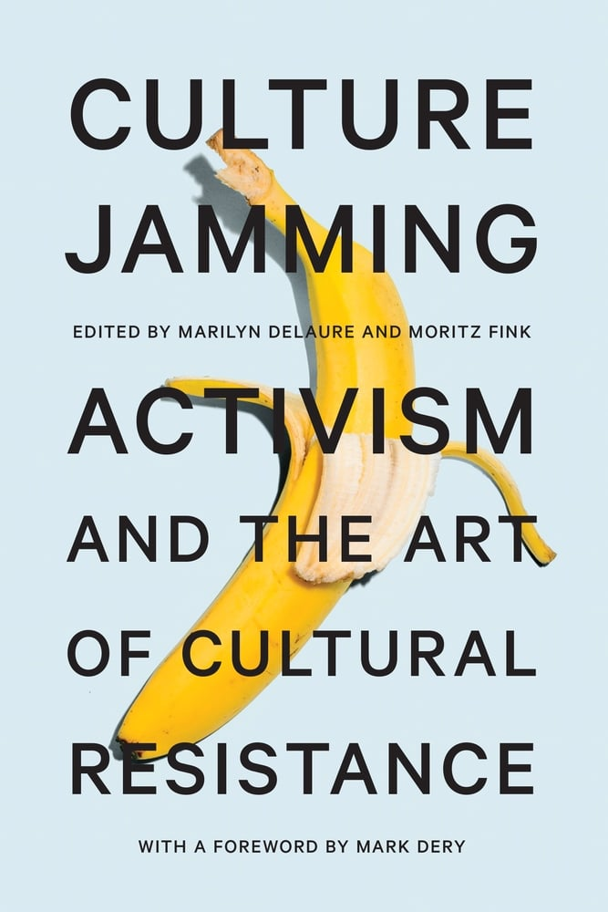

Generate a website to encourage mass boycotts of malicious brands — without any programming knowledge
Generate a website to encourage mass boycotts of malicious brands — without any programming knowledge
DomainDissidence is a simple method of generating a spoof website that offers fake discount codes for ethically questionable companies.
The website redirects to a list of a company's wrongdoings when one of the "coupons" is attempted to be redeemed.
This is designed to directly target and inform patrons of given companies to deter them from offering money that would be used towards detrimental activities.
Almost every large company practices or enables exploitation at some level.
Most people feel powerless or otherwise voiceless in combating injustice.
Protesting through the internet, the largest accessible shared space in the world, is the easiest way for people to reach mass audiences.
The internet is the newest unexplored but necessary venue of activism with little demonstration of its prowess as a tool for protesting.
Most people feel powerless when confronted with systemic opression or other forms of injustice.
The internet is the new battleground of protesting — reaching a large audience is the easiest it has ever been.
It is only natural that the internet be a route of protest in dismantling exploitation.
Offer a unique way for individuals to combat widespread injustice perpetuated by organizations.
Offer a solution for citizens feeling voiceless when facing injustice.
Contribute to the new(ish) concept of internet-sourced activism.
This project was heavily inspired by the writings of Marilyn Delaure, Moritz Fink, and Mark Dery in Culture Jamming: Activism and the Art of Cultural Resistance.
